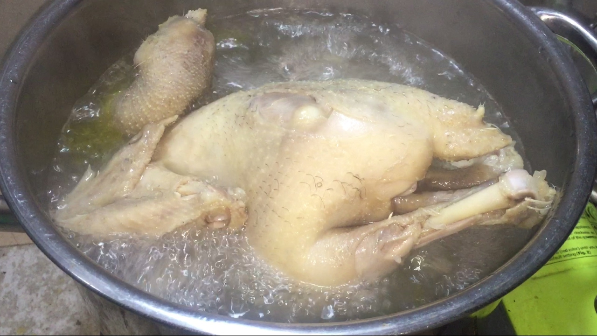

Akshay's Recips :))
How to Boil Chicken Step-by-Step

Description
Follow these simple steps for making flavorful, boiled chicken,
based on this Boiled Chicken recipe. You can always switch up the
spices and ingredients to flavor to your liking.
Ingredients
- 1 whole chicken or 4 boneless chicken breasts
- 4 cups water or chicken broth (enough to cover)
- 1 onion, halved-unpeeled
- 3 carrots, cut into chunks-unpeeled
- 2 stalks celery, cut into chunks
- 1 tablespoon whole peppercorns
Steps
- Place the chicken in a large pot, along with the onions, carrots, celery, and peppercorns.
Add water or broth to cover.
- Cover the pot and bring to a boil. Reduce heat to a gentle boil.
- For a whole chicken cook for about 90 minutes. For boneless chicken breasts, cook for
15 minutes or until no longer pink.
- Remove chicken, let cool and shred with a fork or chop the meat using a knife.